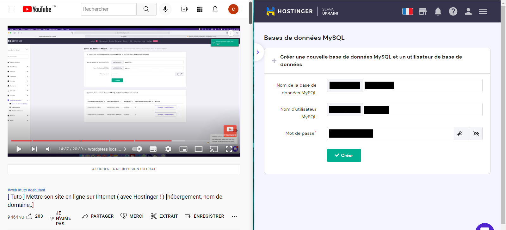
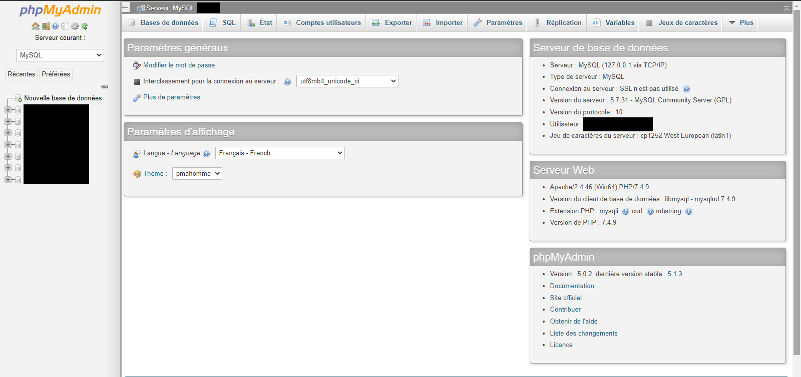

Travailler en mode projet
Création cahier des charges et maquettes
Concevoir et développer une solution applicative
Création de 2 formulaires et d'un calendrier événementiel
Utilisation des Médias Queries
Mettre à disposition des utilisateurs un service informatique
Installation du site sur le serveur

Trouver des erreurs avec l’inspecteur
Gérer les données
Création d'une base de données en local
